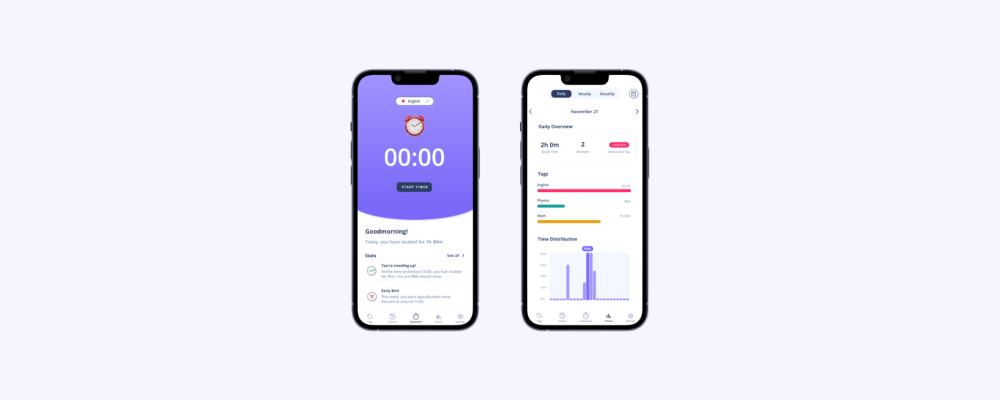
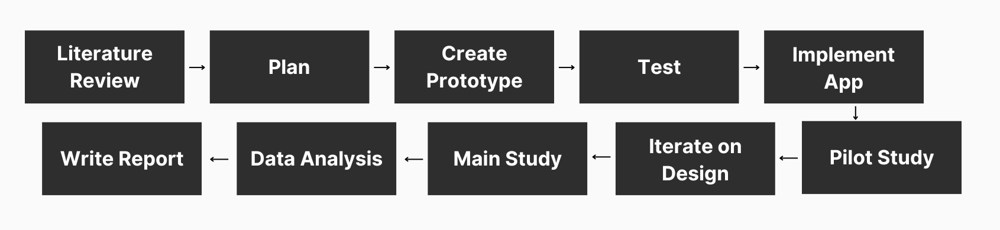
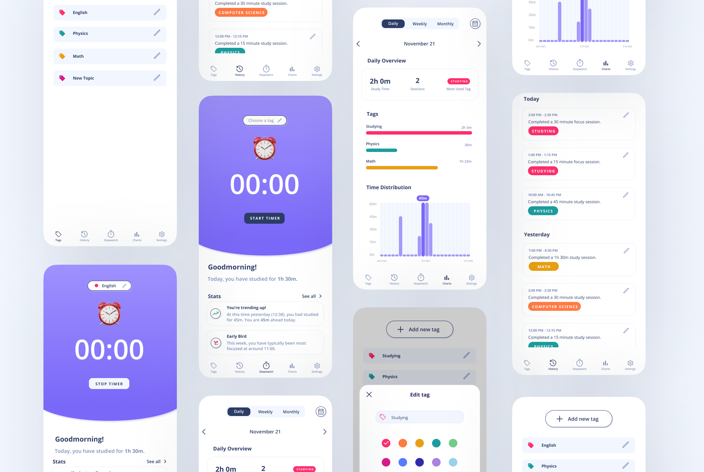
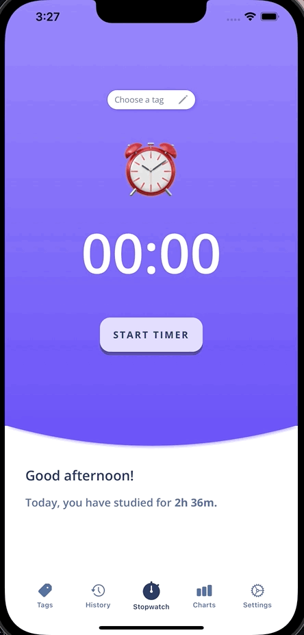
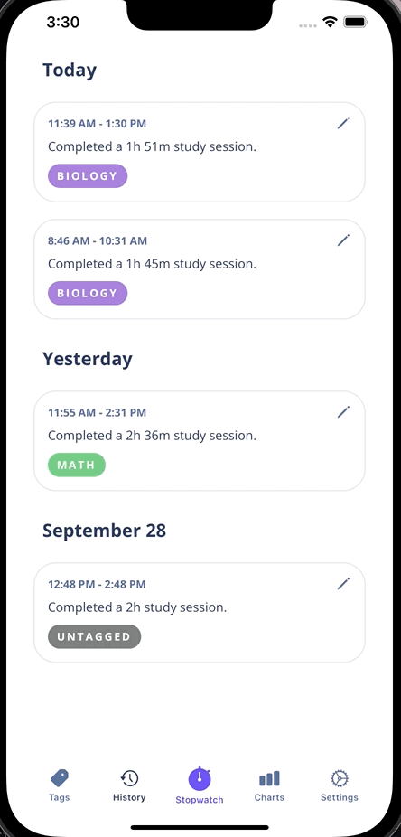
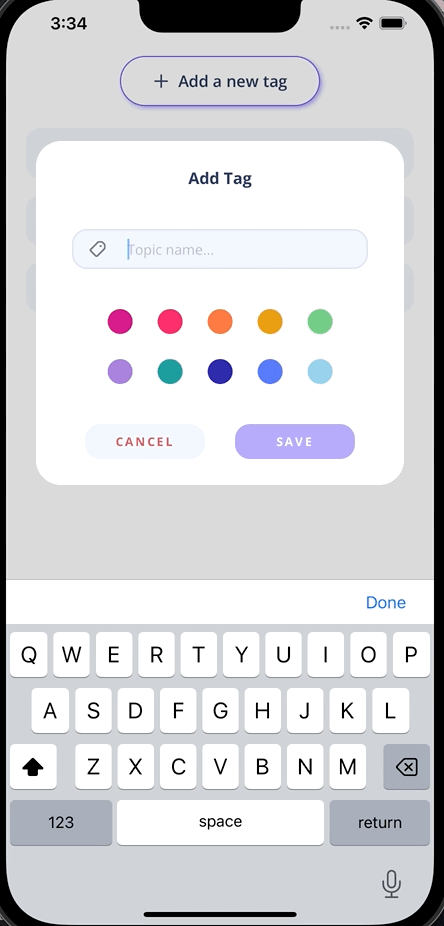
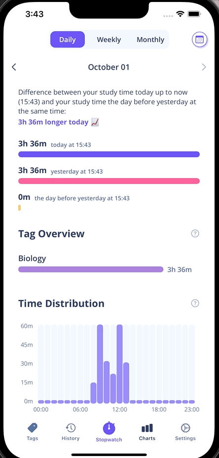
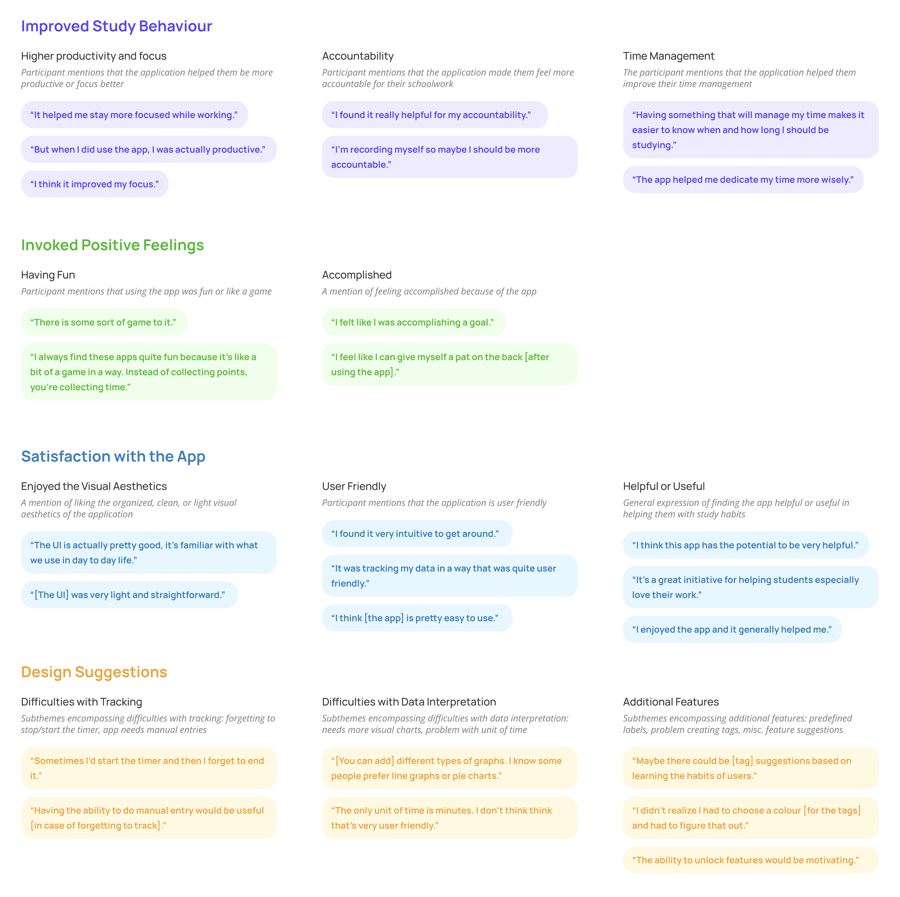
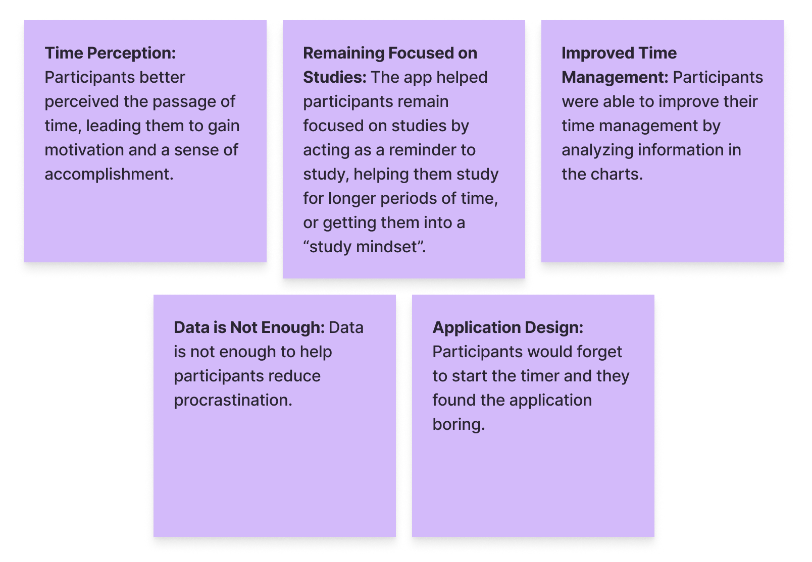

Back to top

Academic procrastination and personal informatics
Project Type
Master's Thesis (Carleton University)
Master's Thesis (Carleton University)
Duration
May 2022 — Aug 2023,
16 Months
May 2022 — Aug 2023,
16 Months
Methods
Literature Review,
Usability Study,
Semi-Structured Interviews,
Surveys
Literature Review,
Usability Study,
Semi-Structured Interviews,
Surveys
Key Skills
Prototyping,
User Research,
Qual + Quant Analysis
Prototyping,
User Research,
Qual + Quant Analysis
Overview
Problem Statement
A big issue that University students deal with is procrastination. However, currently available interventions for procrastination can be expensive and time-consuming. Therefore, I aimed to discover if tracking study time with the help of technology can help improve study behaviour and decrease procrastination.My Role
Primary Researcher - independent thesis projectResearch Process
Prototype
Design Process
The prototype was inspired by currently available productivity tracking apps on the market. No gamified or social features were added, because the study aimed to solely explore how self-tracking features impact procrastination. First, I made some rough hand sketches of the app. Then, I created wireframes, followed by a high-fidelity prototype. The final high-fidelity Figma prototype is shown below:
Usability Study
The purpose of the usability study was to evaluate the usability of the application and to identify areas for improvement. 8 participants aged 21 to 30 years old were recruited. Participants were instructed to think out loud as they performed tasks in the high-fidelity Figma prototype, and then filled out the System Usability Scale. The resulting average SUS score was 83.75. Participants found some of the charts confusing, so I added a button to each chart that can be clicked to display an explanation of the chart.The StudyTracker App
Implementation
I implemented StudyTracker using SwiftUI and it was compatible with iOS 15.0+. Users were able to time their study sessions using the timer on the homepage. There was also a history section that allowed users to edit or delete previous sessions. The app featured tags so users can tag each study session as a different subject. Finally, the app provided feedback about study time in the form of text and charts.




Pilot Study
Procedure
The purpose of the pilot study was to ensure that the application was bug-free and to receive initial feedback.
I aimed to explore several research questions:
01
What are students' thoughts on the developed application?
02
How does the app impact students' study behaviour?
03
How can the app be improved?
7 participants aged 18 to 51 years old were recruited for the study. Participants first filled out a pre-study demographics survey, then used the developed application for 10 days. After the 10 days, I conducted semi-structured interviews over Zoom about their experiences using the app.
Results
The interview transcripts were analyzed using thematic analysis with an inductive approach. The 4 main themes that emerged are described below:
The app was iterated on in preparation for the main study. From the pilot study feedback, I added an explanation to each chart and a notification that informs the user if the timer has been running for awhile, along with some other small changes.
Main Study
Procedure
The purpose of the main study was to explore if the app had a positive impact on procrastination and study habits.
I performed a 6-week randomized controlled trial with 9 participants in each group, where the experimental group used the app and the control group did not use the app. Each group responded to an initial and final procrastination questionnaire, along with weekly procrastination questionnaires to assess any subtle changes.
H1
The participants in the experimental group will experience a significantly greater decrease in procrastination scores than the participants in the control group.
RQ1
How does the app impact students' study behaviours?
RQ2
How do students interact with and interpret their study data?
Qualitative Results
The interview transcripts were analyzed using thematic analysis with an inductive approach. The 4 main themes that emerged are described below:
Conclusions
Reflection
Due to lack of participants, it was difficult to conclude whether or not the application had an impact on procrastination habits. In fact, statistical analysis showed that the control group experienced a greater decrease in procrastination scores than the experimental group. Perhaps the app was not engaging enough, or consistently tracking study sessions is too much of a burden on students. Overall, self-tracking applications may be able to help students with procrastination and study habits however additional persuasive features are needed to keep users engaged.Design Implications for Quantified Self Apps
01
Reminding Users to Track: Notification reminders should be used to remind users to track; however, these notifications should be customizeable because some users may find notifications annoying.
02
Ensuring That Data is Accurate: Every self-tracking app should provide the users with options to edit or delete entries, especially if the tracking is semi-automated. This is important because users place a lot of value on the accuracy of their data when it comes to analyzing their data.
03
Optimizing Data Visualizations: There was a lack of pattern in the type of feedback that participants preferred. This suggests that a wide variety of charts should be provided, since there is no "one size fits all" solution. It's a good idea to also display the same type of information, but in different types of charts (i.e., bar charts vs line charts). Ideally, self-tracking apps should include a customizable dashboard.
04
Gamification and Social Features: Participants desire a wide variety of persuasive features when it comes to persuasive applications. Self-tracking was simply not enough for some participants. Therefore, apps should provide a variety of quantified self, gamified, and social persuasive features depending on the goal of the app.